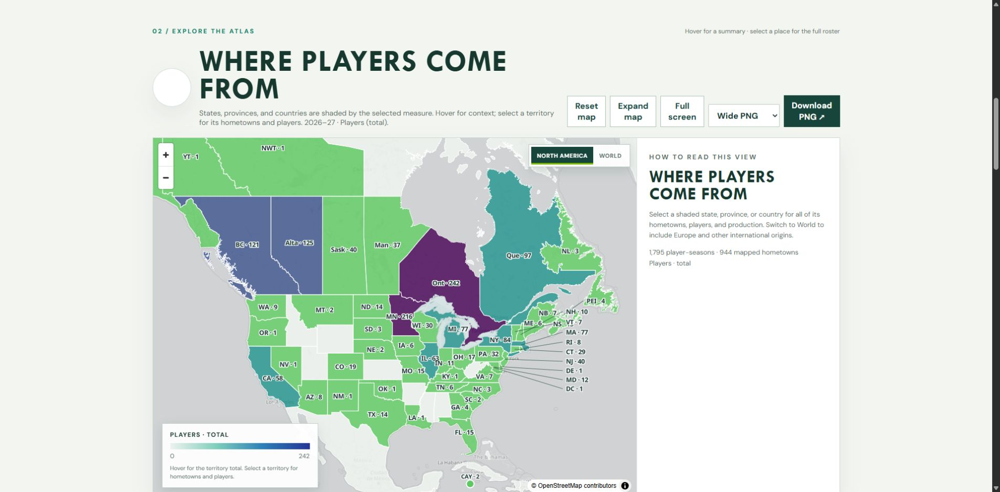
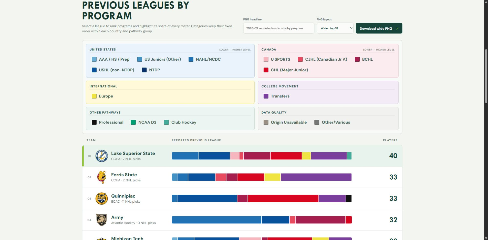

Preserve the source.
Gather current and archived records, retain raw inputs and source keys, and save snapshots when source information changes.
Independent project / College Hockey Data
College Hockey Data brings season, roster, game, and player records together in a growing archive, then makes them accessible through interactive maps and visual studies.
The starting point
The project grew from hockey analysis and visual posts for r/collegehockey. Answering broader questions meant bringing current College Hockey News records together with archived season, roster, game, and draft material.
The difficulty was in the details: changing team names, overlapping sources, incomplete seasons, player identities, and corrections that arrive after a game ends. A chart is only as useful as the records behind it.

The approach
Gather current and archived records, retain raw inputs and source keys, and save snapshots when source information changes.
Use documented team aliases and player identity rules to bring sources together. Leave uncertain matches and missing values explicit.
Turn the prepared data into studies with season and program filters, comparisons, coverage notes, and downloadable images.
Revisit recent and missing game boxes, validate program, date, and scores, and keep an audit of substantive corrections before publication.
The experience
Player Atlas maps reported hometowns. Roster Origins compares the previous teams and leagues reported on college rosters. Conference Race replays standings over time. Other studies explore draft history, returning production, team statistics, age, and game control.
These interfaces turn repeated analysis questions into something a visitor can investigate directly, then share as a clean image.
What carries into other work
The same concerns show up in business systems: duplicate records, inconsistent labels, late corrections, incomplete information, and users who need a clear answer.
This project demonstrates how I approach those concerns across collection, data modeling, quality checks, reporting, and interface design. The public site is the visible result of that connected work.
Python / SQLite / JavaScript / HTML & CSS / Data visualization

An ongoing independent fan project. Historical coverage varies by season and source; reported hometowns and previous leagues are not presented as verified birthplaces or transactions. College Hockey Data is not affiliated with the NCAA, College Hockey News, or any school or conference.
Continue the conversation
I’m interested in applying this approach to reporting, records, business systems, and operations support.